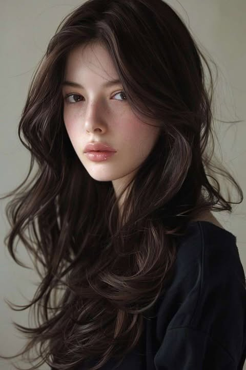
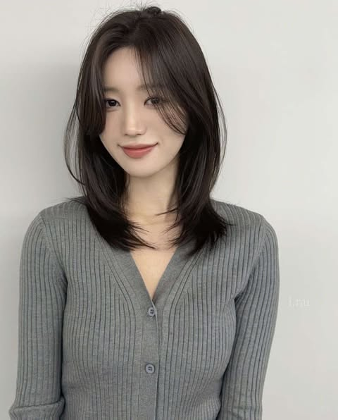
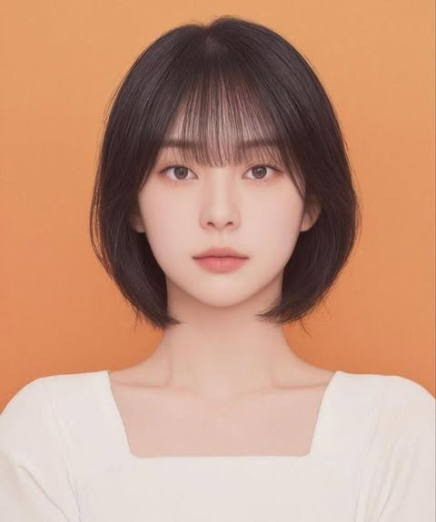
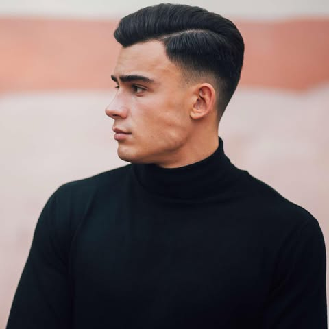
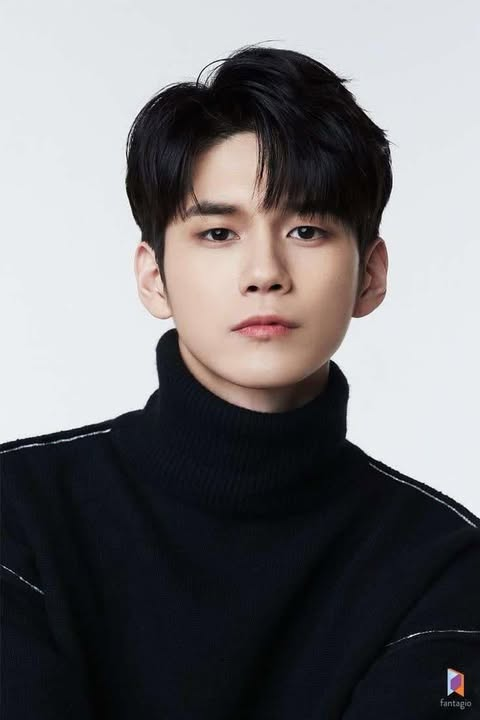
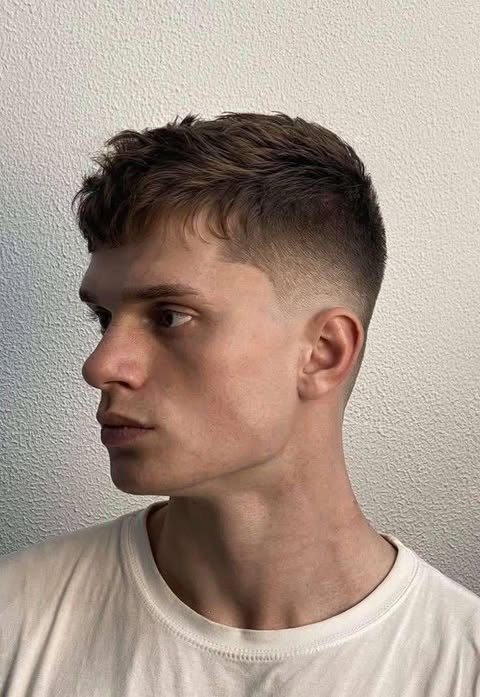

1)ผมยาวดัดลอน
เพราะการดัดผมจะช่วยเปลี่ยนผมตรงธรรมดาให้ดูสวยมีเสน่ห์ อีกทั้งยังเพิ่มการสปริงตัวของเส้นผม ทำให้ผมดูหนาและมีน้ำหนักมากขึ้น และยังหลอกตาว่าใบหน้ากว้างอีกด้วย

2)ผมสั้นประบ่าสไลด์เลเยอร์
ทรงนี้ช่วยให้ผมดูหนาขึ้น มีวอลลุ่มเหมาะกับสาวผมบางเป็นที่สุด จะเซ็ตหรือไม่เซ็ตก็ได้ขึ้นอยู่กับความสะดวกในแต่ละวัน ถ้าเซ็ตก็ได้ลุคที่ดูเป๊ะ วันไหนไม่เซ็ตก็ได้ทรงลอนเบา ๆ ดูสบายตา

3)ผมบ๊อบปลายงุ้ม (Soft Curl Bob)
ทรงนี้จะช่วยให้มีคสามขี้เล่นมากขึ้น ส่วนปลายผมที่งุ้มระดับคางจะช่วยให้รูปหน้าดูเล็กลง ส่วนหน้าม้าซีทรูบางเบาจะช่วยให้ลุคดูอ่อนหวานและสดชื่น

4)ทรง Undercut
สไตล์การตัดอันเดอร์คัต จะเป็นการตัดเส้นผมด้านข้างทั้งสองข้างและด้านหลังออกไป โดยจะไถเตียนขึ้นไปประมาณ 2 นิ้วมือจากส่วนของใบหู ส่วนผมบริเวณด้านบนศีรษะจะตัดให้ยาว เพื่อไว้ใช้เซ็ตผมตามสไตล์ที่ชอบ เพราะเป็นทรงที่เซ็ตได้ง่าย ทั้งยังเรียบร้อย ดูดี

5)ทรงComma
Comma hair คือทรงผมที่มีหน้าม้าม้วนเข้าคล้ายสัญลักษณ์ Comma (,) จะแสกกลางหรือแสกข้างก็ได้ แล้วไดร์ผมกับเซ็ตผมให้ม้วนเข้า ส่วนบริเวณกลางหัวลงมาจะซอยไล่ระดับหรือไถเฟด เป็นทรงผมที่เป็นทางการ เหมาะสำหรับการออกงาน

6)ทรง Skin fade
สกินเฟด (Skin Fade) คือ ผมรองทรงเฟดแบบเห็นหนังศีรษะ หรือรองทรงแบบสั้น ซึ่งช่างจะใช้เทคนิคการตัดผมด้วยการไถปัตตาเลี่ยนไล่ระดับความยาวของเส้นผมจากยาวไปสั้น ทำให้ความหนาของผมค่อย ๆ เฟดลง จนกระทั่งเนียนกลืนไปกับหนังศีรษะ